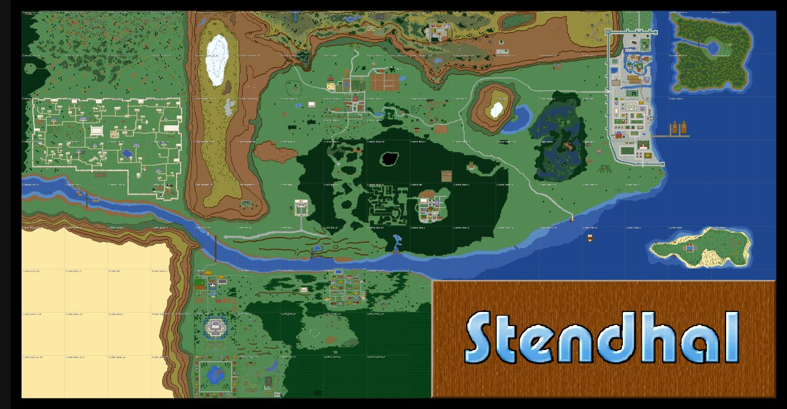
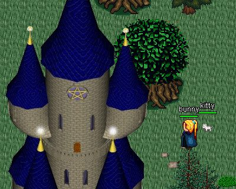
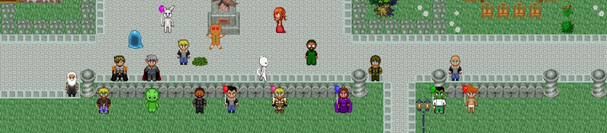

What the game is
A tile-based fantasy MORPG with quests, NPC dialogue, combat, items, maps, dungeons, and character progression.
A classic open-source multiplayer online role-playing game: explore a large 2D world, talk to NPCs, complete quests, fight monsters, gather equipment, and play with persistent characters.
Choose Stendhal when you want a lightweight MMO-style world rather than a one-screen arcade game. Client downloads are restored locally; the older website/doc mirror still needs rebuilding, and a local private server still needs a proper smoke test.
A tile-based fantasy MORPG with quests, NPC dialogue, combat, items, maps, dungeons, and character progression.
The Java ZIP, Android APK, server ZIP, and hub screenshots are cached on GannanNet. The older website/doc mirror is still pending repair.
The local Stendhal server path has not been promoted or tested. Until then, this is a client/manual cache and research hub, not a proven offline MMO server.
Stendhal 1.49 client and server files are stored locally. The offline server path still needs a full account/login smoke before this is promoted as a ready MMO.
Desktop client for Java-capable computers.
Download ZIPAndroid client package.
Download APKCached for the future private LAN server smoke.
Download server ZIPChecksums and this quick guide are local. The older website/doc mirror is pending repair.
Open download shelfSelected screenshots are cached inside this hub so the arcade can explain the game offline.



This is a starter guide, not a full manual. The old website/doc mirror still needs rebuilding, so this page avoids stale links and keeps the working downloads visible.
The quick guide here covers the first LAN Arcade basics: movement, NPCs, combat caution, map reading, and the remaining server work.
NPC dialogue drives quests and directions. Read responses carefully rather than clicking through.
Combat can punish wandering too far too early. Heal, upgrade, and retreat when needed.
The mirrored world map helps players find towns, dungeons, regions, and points of interest.
A real offline LAN deployment needs the server launched locally and tested with multiple clients.
These links only point at files currently present on GannanNet. The older website/doc mirror links were removed until that cache is rebuilt.
The official website/doc mirror is pending repair; current working links are local downloads, screenshots, quick notes, and attribution.
See ATTRIBUTION.txt for screenshot and source notes.
This tells players whether the entry is ready to play or only ready to research.
/var/www/html/mirrors/stendhal, about 907 MB
ZIP and Android APK found
Launch a local Stendhal server and test two clients
{kind=link}